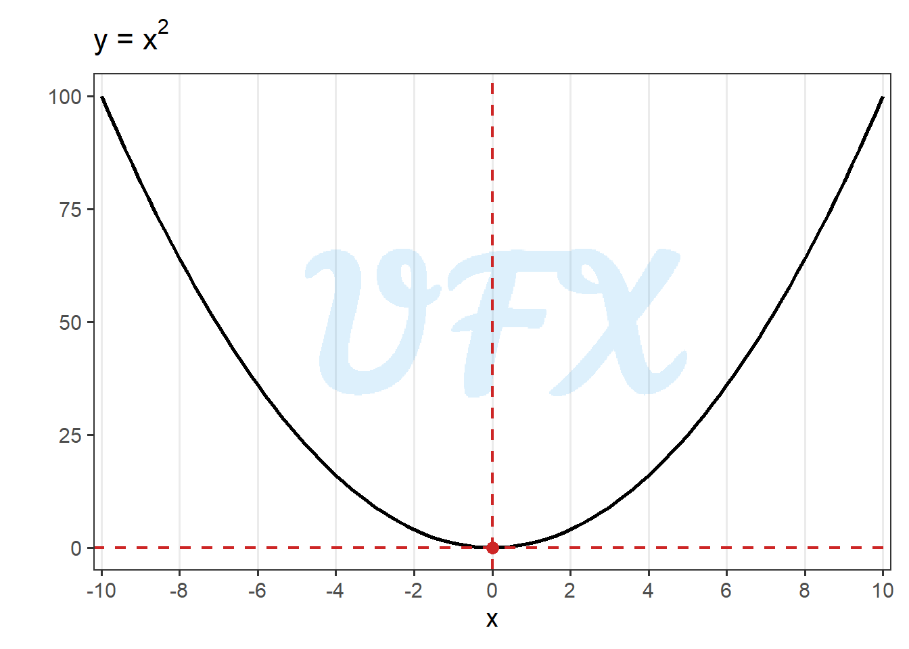
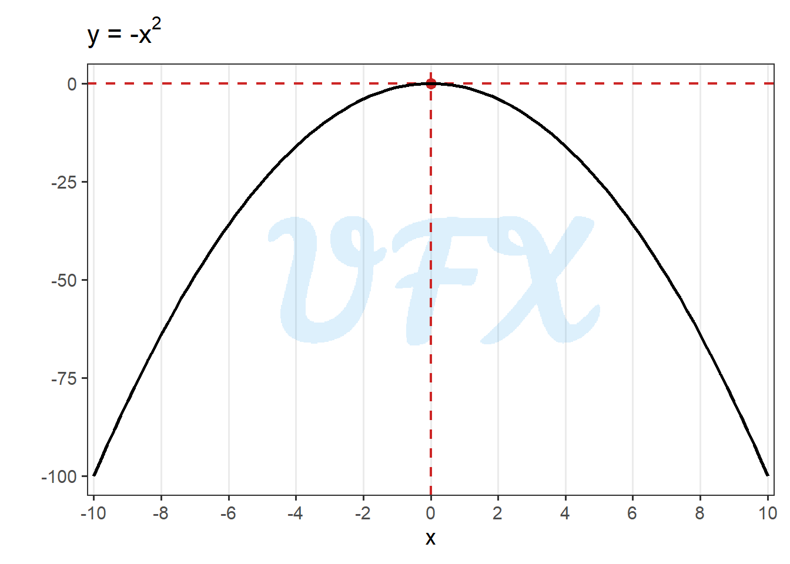
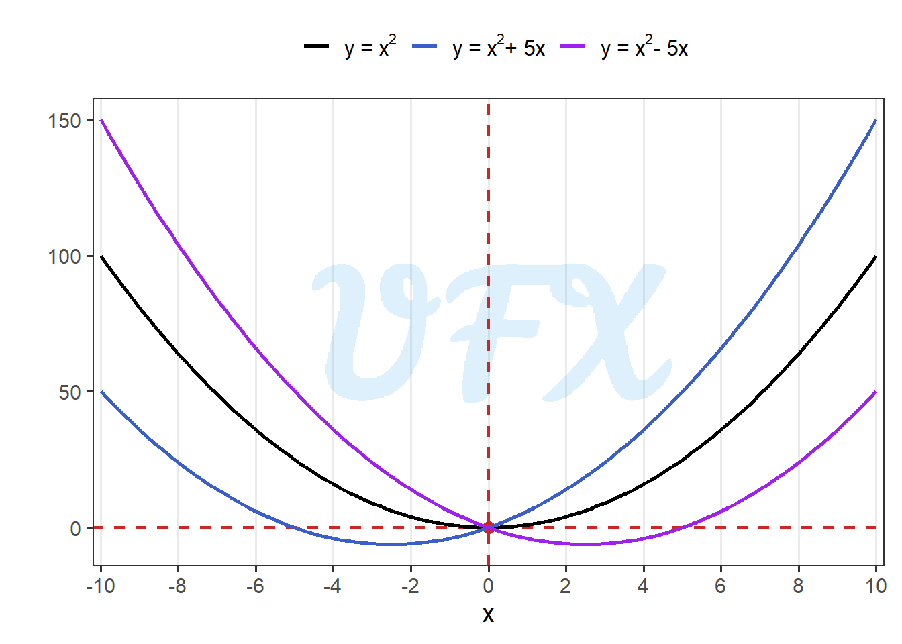
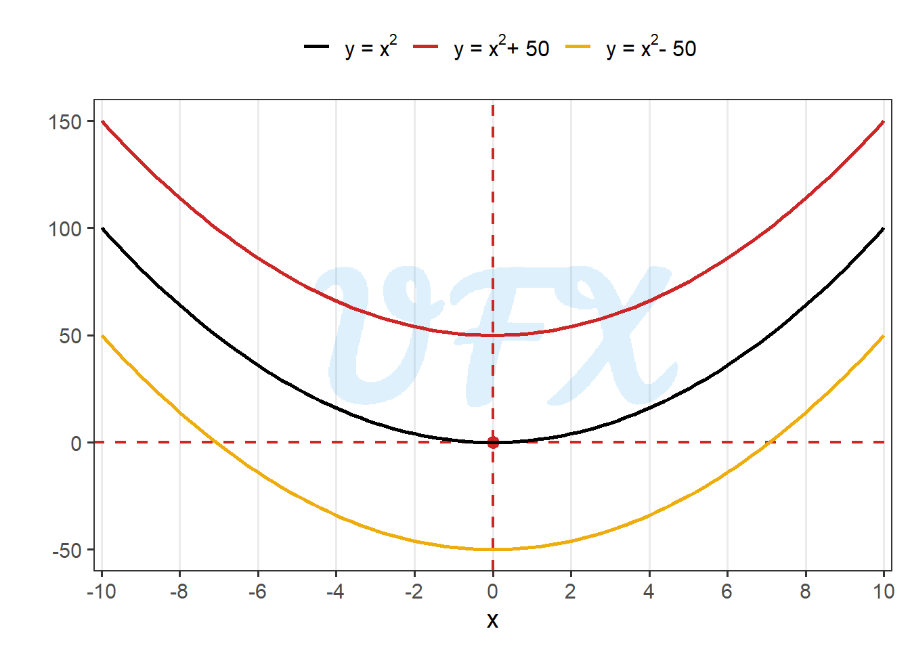

In this post, we explore the root of the quadratic equation, i.e., Bhaskara formula.
Context
The quadratic equation is given by:
\[ ax^2 + bx + c, \tag{1}\]
where:
\(x\) is the variable;
\(a,b,c\) are the coefficients.
Here an example of a quadratic function:
In the example above \(b\) and \(c\) are zero, meaning that the function will display a simetric result around zero.
Now, let’s say what happens when \(a\) is negative.

In the example above \(b\) and \(c\) are zero, meaning that the function will display a simetric result around zero, but now the effect is inverted, where the values decreases as \(x\) increases.
Now, let’s say what happens when \(b\) changes.

In the example above when \(b > 0\), \(y\) increases more for \(x > 0\). At the same time when \(b < 0\), \(y\) increases more for \(x < 0\).
Now, let’s say what happens when \(c\) changes.

In the example above we see that \(c\) is just a incremental term, moving the function, but not changing its behavior.
Proof
The goal of this post is to proof the formula of roots of the quadratic equation (i.e., Bhaskara formula), so:
\[ ax^2 + bx + c = 0. \tag{2}\]
In the Equation 2, we divide by the term \(a\):
\[ x^2 + \frac{bx}{a} + \frac{c}{a} = 0. \tag{3}\]
In the Equation 3, we subtract the term \(-\frac{c}{a}\):
\[ x^2 + \frac{bx}{a} = -\frac{c}{a}. \tag{4}\]
Through a math property, we have that:
\[ (a+b)^2 = a^2+2ab + b^2. \tag{5}\]
In the Equation 4, to achieve the property in Equation 5 we can add the term \(\frac{b^2}{4a^2}-\frac{b^2}{4a^2}\):
\[ x^2 + \frac{bx}{a} +\left(\frac{b^2}{4a^2}-\frac{b^2}{4a^2}\right)= -\frac{c}{a}. \tag{6}\]
In the Equation 6, we add the term \(\frac{b^2}{4a^2}\):
\[ x^2 + \frac{bx}{a} +\frac{b^2}{4a^2}= -\frac{c}{a} + \frac{b^2}{4a^2}. \tag{7}\]
In the Equation 7, we can see now that the left side is a case of Equation 5, then we apply it:
\[ \left(x + \frac{b}{2a}\right)^2= -\frac{c}{a} + \frac{b^2}{4a^2}. \tag{8}\]
In the Equation 8, now we will put the right side in the same denominator
\[ \left(x + \frac{b}{2a}\right)^2= \frac{b^2-4ac}{4a^2}. \tag{9}\]
In the Equation 9, we take the square root:
\[ x + \frac{b}{2a}= \pm \sqrt{\frac{b^2-4ac}{4a^2}}. \tag{10}\]
In the Equation 10, we can apply the square root separately to the demonimator and numerator:
\[ x + \frac{b}{2a}= \pm \frac{\sqrt{b^2-4ac}}{\sqrt{4a^2}}. \tag{11}\]
In the Equation 11, we can solve the denominator, since \(\sqrt{4a^2} = 2a\).
\[ x + \frac{b}{2a}= \pm\frac{ \sqrt{b^2-4ac}}{2a}. \tag{12}\]
In the Equation 12, we will move subtract the term \(\frac{b}{2a}\).
\[ x = -\frac{b}{2a} \pm \frac{\sqrt{b^2-4ac}}{2a}. \tag{13}\]
In the Equation 13, we just put all terms in the same denominator.
\[ x = \frac{-b \pm\sqrt{b^2-4ac}}{2a}. \tag{14}\]
Finally, we reached the Bhaskara formula in the Equation 14.